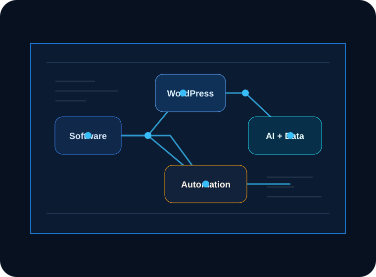

Software Development
Product-grade interfaces, service integrations, maintainable front-end systems, and pragmatic architecture for evolving teams.
Web software developer / WordPress systems lead
A premium portfolio theme for technical work that has to feel polished on the surface and dependable underneath: clean interfaces, practical architecture, measurable behavior, and delivery discipline.

Capabilities
Product-grade interfaces, service integrations, maintainable front-end systems, and pragmatic architecture for evolving teams.
Custom themes, editorial workflows, template systems, performance-minded builds, and admin experiences that stay usable.
Local workflows, QA gates, content operations, review pipelines, and internal tools that remove repeated manual effort.
Structured AI features with scoped prompts, review points, privacy-aware patterns, and product value beyond novelty.
Event strategy, conversion tracking, dashboard-ready naming systems, and measurement plans teams can trust.
Architecture direction, vendor review, delivery planning, mentoring, documentation, and calm execution through ambiguity.
Featured work
WordPress theme architecture for a content team that needed faster publishing, cleaner templates, and analytics-ready events.
A local workflow surface that grouped planning, build validation, QA evidence, and release notes into one repeatable path.
A structured intake and triage experience using constrained prompts, human review, and reusable output patterns.
Systems thinking
Technical stack
Contact
Use this section for a real contact route, project intake link, or concise availability note when the theme is customized for production.